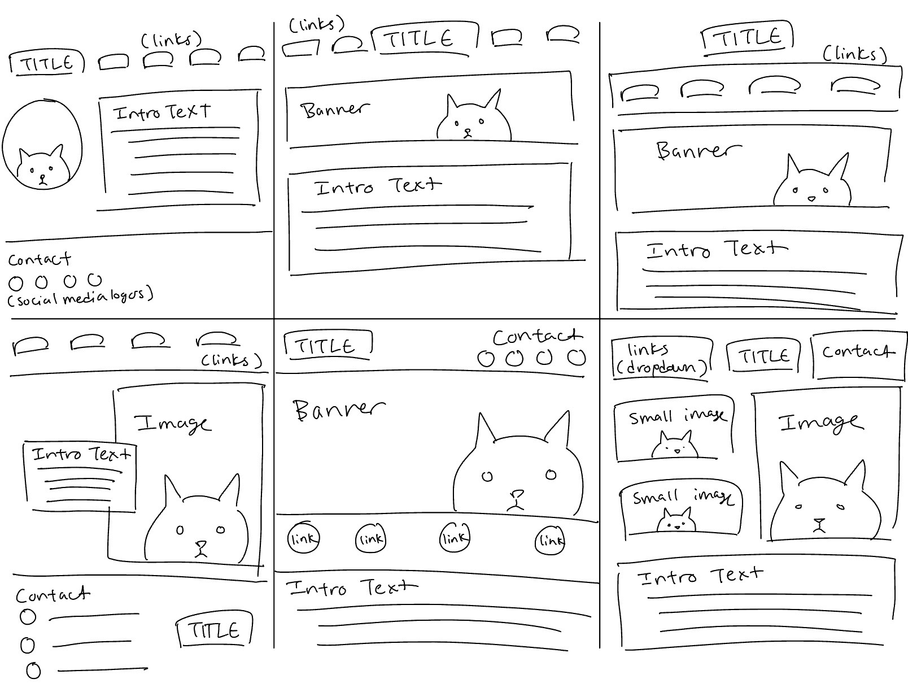
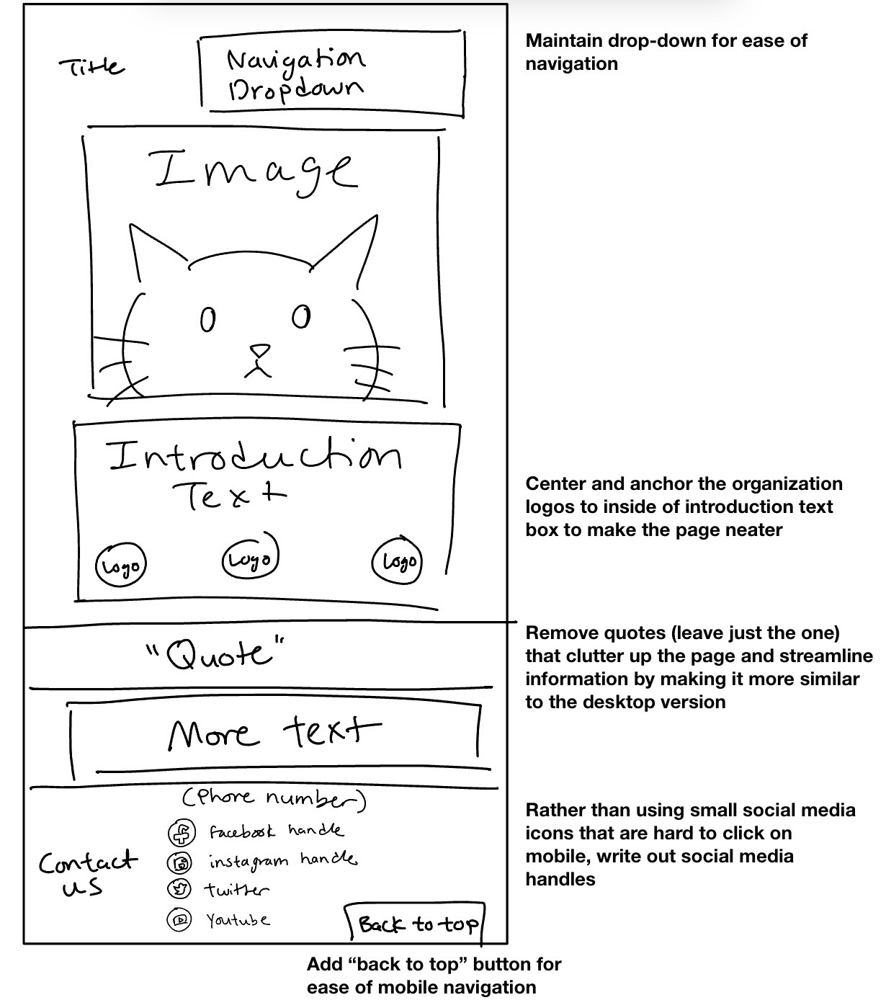
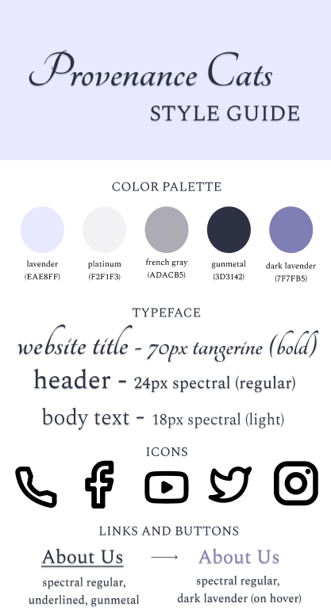

Project 2: Responsive Redesign
Part 1: Identifying Usability Problems


For this project, I set the goal of re-designing an existing website to be more streamlined, accessible, and responsive to different screen sizes. I chose the homepage for a private cat breeding business called Provenance Cats, because I have an interest in cats and felt the website left a lot to be desired, including the color palette I found hard on the eyes.
Usability concerns
Before I actually began to plan my redesign, I identified a few usability concerns that I wanted to address. In particular:
- The website's desktop homepage doesn’t utilize space in the most efficient way, with a wide gap between the top of the page and the navigation bar itself. This is wasteful of the entire screen’s space and looks somewhat disorganized.
- The desktop site also has an automatic music player, which feels very outdated and has the potential to startle anyone who views the website.
- The mobile homepage is strangely designed, with vastly different information from the desktop's homepage. On the mobile website, a large majority of the page is filled with various quotes about cats, while the desktop page lists more information about the business itself.
- On both pages (especially the mobile version, where it can be even more difficult to be precise), the social media logo icons are very small and difficult to click.
- The color scheme of the website is difficult to read in both formats: specifically, the saturated dark teal background makes the black text blend in.
Accessibility
WebAIM WAVE identified numerous accessibility issues with the website, including missing alternative text for images, contrast errors for text, and a lack of HTML structures including headers. I agree with WAVE’s findings in that I can imagine it would be very difficult for someone using a web reader to navigate this page. I also believe there are numerous other issues with the page that WAIVE wasn't able to identify: specifically, the contrast issue I previously identified of gray text against the teal backdrop.
Part 2: Visual Redesign
The next part of the project was brainstorming ideas for my redesign.
I began with 9 speed sketches, each taking around a minute. I tried to incorporate different elements into each sketch and figure out which aspects I wanted to incorporate into my final design.

ANNOTATE WIREFRAMES AND ADD HERE
 